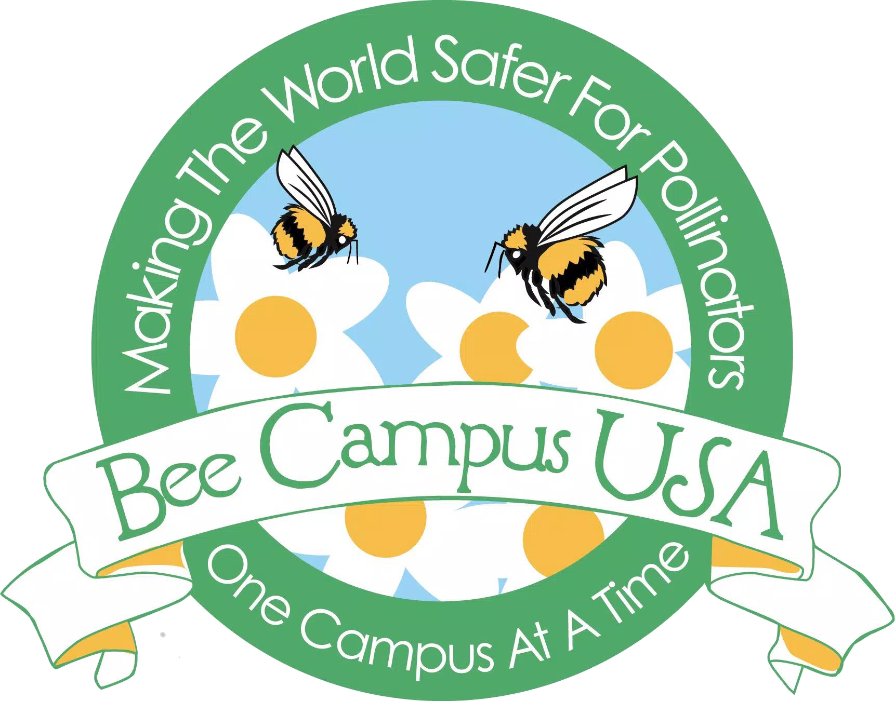

Bee Campus USA at the University of Illinois (Urbana-Champaign)
Bee Campus USA is a nation-wide movement to gain awareness and support of pollinators
across universities. U of I has committed to evolving our landscapes, lifestyles, and mindsets to
be more pollinator-friendly.
Like us on Facebook!
Ways to Bee Involved
Events:
Throughout the school year, service-learning events are hosted by environmental RSO’s on
campus. Red Bison
works to restore native grasslands and forests,
while Students for Environmental Concerns
integrates agriculture into the more urban parts of our campus. Not a student? That’s okay!
The Master Naturalists Program
is open to anyone interested in environmental stewardship.
Bee Campus USA hosts our annual Pollinator Awareness Event every spring!
Past events: April 27th, 2018 Bee Movie Screening & Plant Giveaway
Locate Our Pollinator Pockets:
The University of Illinois (Urbana-Champaign) has a wide number of gardens and prairies that
provide our pollinators with the pollen they need to survive. Check out our campus map, and
even upload photos when you spot pollinators at these pockets!
Build Your Own Pollinator Garden:
Support native pollinators right in your own backyard! Building a garden will give bees, beetles,
and butterflies a source of food, and will add a beautiful aesthetic to your home. Also, check
out our native plant list and integrative pest management plan (IPM) to see how our campus is
moving toward a more pollinator-friendly landscape!
Education:
The Department of Entomology
has a wide variety of courses, many with a focus on pollinators! See the U of I
course catalog
for current classes being offered.